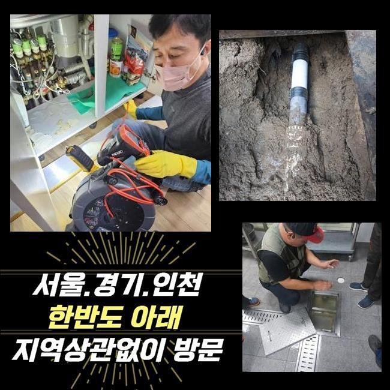
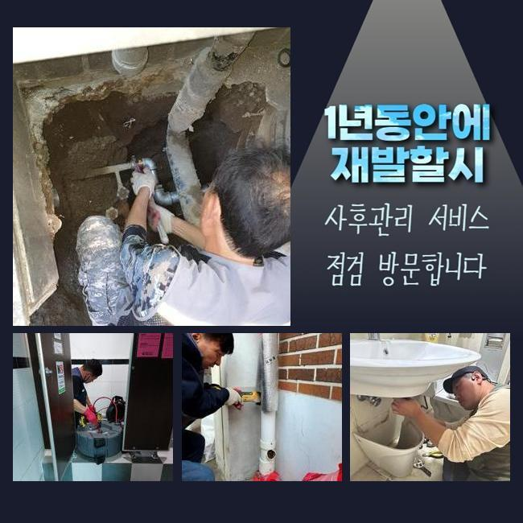
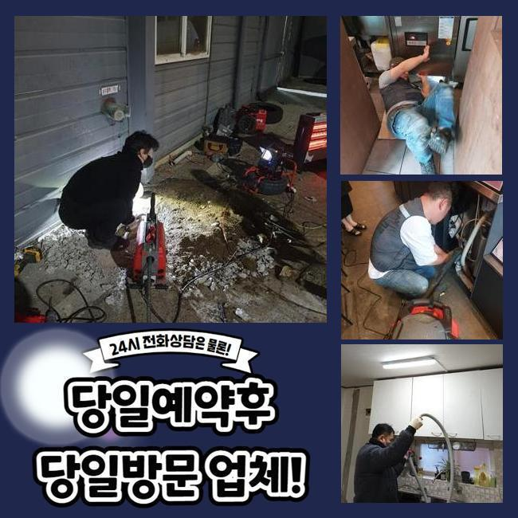
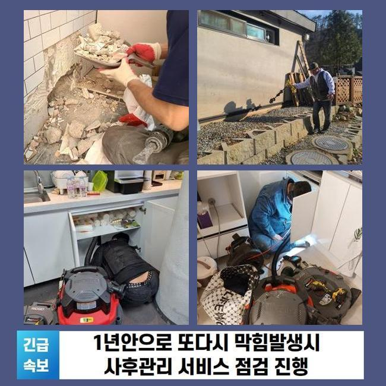
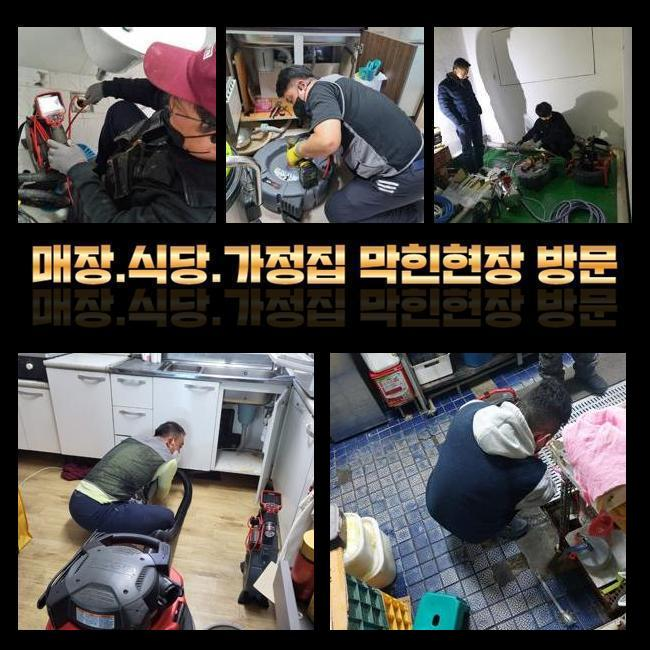
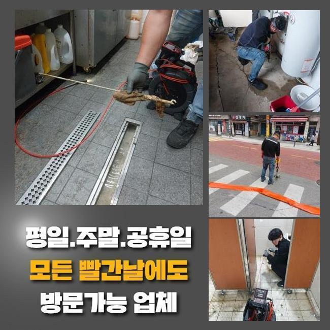
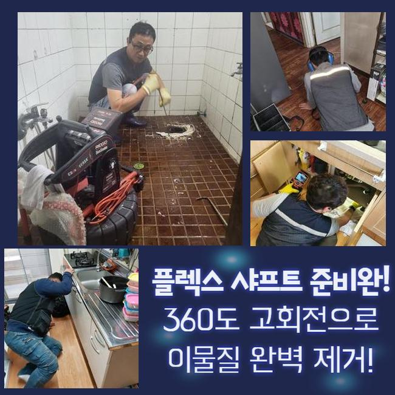

🏠 안양 박달1동욕실뚫음 악취차단 배관공사
용인시 처인구 배관막힘 전문 시공 후기

📋 작업 개요
- 위치: 용인시 처인구, 수원시 영통구, 화성시 동탄
- 서비스 유형: 배관막힘, 누수수리, 고압세척, 내시경점검
- 작업 일시:
- 업체명: 하수구수사대 (010-5615-2118)
🔍 문제 상황
안양 박달1동욕실뚫음 악취차단 배관공사
갑자기 하수구막힘이 발현되는경우 다양한 불편함들이 생길수밖에 없는데요
그전에 관리해주는게 알맞은대처인데 이런조치를 취하지않는 경우가 대부분입니다
최근에방문한 작업장소를 통해서 막힘현상이 나타났을때 업체가있어야하는 이유에대해서 공개해볼게요!
주택시설로 이뤄진 장소였는데 역류문제로 인하여 곤란한일이 발생했다고 의뢰하셔서 내방하게되었는데요
고객분께서 이사한지 오랜기간이 흐르지 않았는데도 막힘문제가 발발되었는지 원인에대해 궁금해하셨어요
자세하게 알려드리고자 막힌원인부터 알아보기로했습니다
주택뒤쪽에 보일러실쪽으로 이동했죠
거주한지 얼마되지않아 하수구문제가 발현되면 곤란할수밖에 없습니다
배관카메라를 통해서 막힌문제에 대해서 찾아보았죠

🔎 원인 분석
💡 전문가 진단: 정밀 진단 장비를 사용하여 슬러지의 고착 여부를 판명하고 타격/세척 작업을 실시했습니다.
역류문제때문에 하수구속이 보이지않아 석션기로 물을흡입후 내시경기를 집어넣어 체크해주었죠
보일러실 문 앞 외부에 물기가 맺혀서 올라와 있었네요
체크해본결과 주택마당에 하수도가 연결되어있다는걸 파악하게되었죠
의뢰자에게 현재상황에 대하여 설명을해드렸고 어떤방식으로 처리할지 방식에대하여도 안내드리고 시작하고있어요
하수구시스템이 망가진다면 역류증상으로 이어질수있는데요
역류외에도 좀더 심각해지면 물이새면서 근처 이웃에게까지 피해를입힐수 있답니다
주택이라도 한다면 다룬이웃에게 피해는없겠지만 하수구구조가 복잡히 이루어져있으므로 종종 점검해야해요
혹시라도 방치한다면 오늘의 현장과같이 이런증상이 일어나고 곤란함에 처하실겁니다
마당한쪽에있는 외부배관을 발견했죠
맨홀을통하여 오랜기간 쌓이고쌓인 이물질들을 제거해내며 막힘을 해결해냅니다

🔧 작업 과정
커버를열어보니 많은양으로 오수가 흘러나오게되어 마당주변이 오염이되었지만 외부쪽에 위치하고있는 하수구여서 다행이었습니다
내시경점검으로 어떤이유로 막힘이 발생하였는지 파악해주기로했죠
하수구내부에 잔해물들이 가득찬걸 볼수있었고 이쪽부터 고압세척작업을 진행해줍니다
고압세척장비는 강한수압력을 자랑하기때문에 주로쓰고있는 방식이지만 자칫잘못하게되면 노후화된 하수도는 손상이일어날수도 있다보니 압력조절이 필수랍니다
많은잔해물이 제거될때까지 지속하여 작업해주었죠
스케일링중에 배관cctv를 통해서 중간점검으로 파악해가면서 잔여물없이 처리해드려요
각종오염물질을 없애고 작업을마쳤는데 의뢰자께서 이쪽말고도 씽크대배관까지 점검을원하셔서 체크를해봤죠
싱크대안속에 이런잔해물들이 발견되기어려운데 씽크대를 어떤방법으로 관리하셨는지 여쭈었더니 설거지할때 기름제거를 하지않고서 배수구를통해 빠지게두었다고 말씀하셨죠
하수구촬영기로 체크하여 기름이물질이 퇴적된것을 확인할수있었어요
이곳의경우 고압청소기로 시도하기보다는 샤프트기라고하는 기계가 좋아보였기에 샤프트를통해 막힘을 뚫어냈어요
이제는 하수구시스템을 주기적인 관리를할것을 추천드렸답니다
저희들의경우 막힘현상에 대하여 작업이요구될때 의뢰주시면 이유를 원인에대해 밝혀내고나서 처리해드릴게요!
막히게되었을때 놔두면 해결될거라고 생각하시는데 이방법은 올바르지않습니다
일시로는 뚫릴수도있지만 대다수의경우 물이넘치거나 누수가되며 피해가커집니다
이후에 처리하게되면 조치하기 쉽지않고 작업시간이 오래걸려서 문제발견즉시 조치해주는게 좀더간편히 처리하는 방법입니다
하수구문제에 있어서는 전문인과 동행해야지만 완벽한결과물로 보실수있습니다


✅ 작업 완료
일상생활중 급작스러운 막히게되었다면 확실하고 깔끔하게 해결해줄곳을 선택하셔서 정리해보는것이 좋으며 어떤업체로 맡겨봐야할지 모르겠다면 첨부한 번호를통해 연락주신다면 상담을통하여 자세하게 설명하도록할테니 걱정하지마세요!
전국어디라도 한시간내로 방문드릴수있고 분명하게 작업계획을 공개해드리니 걱정마세요
무리해서 해결하려는것과 방치하는행동은 안내드렸던 2차적인 피해들로 불거질수가있으니 조심하시고 문제징조가 나타났을때 곧바로 조치하세요
하수구가 막혀버렸다면 저희와함께 해결해보는건 어떨까요 정확한해결로 나타내도록 하겠습니다!




⚠️ 하수구 배관 막힘 예방 및 관리 가이드
- ✅ 머리카락, 비닐, 물티슈 등 물에 분해되지 않는 이물질은 절대 흘려보내지 마세요.
- ✅ 기름기 많은 식기는 설거지 전 키친타올로 먼저 기름때를 닦아내세요.
- ✅ 주기적으로 배수구에 뜨거운 물을 가득 부어주어 유지방 고착을 방지하세요.
- ✅ 작업 후 1년 이내 재발 시 무상 A/S 보증 서비스를 제공합니다.
💡 핵심 정리
- 확실한 장비 작업(내시경 점검 및 샤프트 스케일링)으로 원인을 뿌리 뽑습니다.
- 작업 후 1년 이내에 동일한 부위 재발 시 100% 무상 A/S 서비스를 보장합니다.
- 서울 · 경기 · 인천 전 지역에 24시간 언제든 긴급 출동할 수 있도록 항시 대기 중입니다.
❓ 자주 묻는 질문 (FAQ)
🚨 용인시 처인구 배관막힘 문제로 고민이신가요?
정확한 원인 진단과 확실한 시공으로 재발 없는 해결을 약속드립니다.
24시간 긴급 출동 | 서울 · 경기 · 인천 전지역 | 1년 내 재발 시 무상 A/S